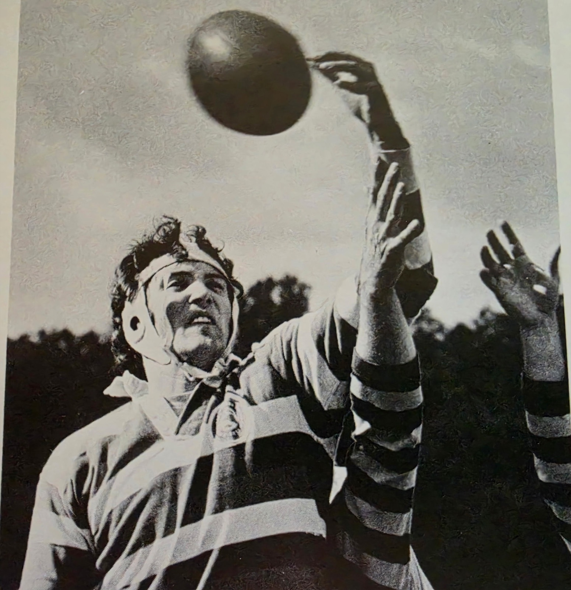

Mizzou Rugby Season Archive
Spring 1973: 2nd, Midwest Intercollegiate · 2nd, Easter Ruggerfest Division · Fall Record Unknown
Rebuilt from the Columbia Missourian's digitized coverage of the club's spring 1973 campaign.
The Columbia Missourian's digitized archive picks up the club's story in January 1973, when the Tigers opened spring practice searching for a full-time coach. Acting coach Sterling Hayden ran Tuesday and Thursday night sessions to get the side ready for a schedule built around the St. Louis Easter Ruggerfest and the Rolla intercollegiate invitational.
The spring opened February 10 against the St. Louis Falcons — Heart of America champions five years running — in cold, slush and ankle-deep mud at Reactor Field, an 8–0 exhibition loss the Missourian covered as much for the mud and the sideline keg as for the rugby. A trip to Rolla brought a split (the first side fell 10–3, the second side won 11–3), and the club then battled through a soggy loss and draw against Iowa State and a loss and scoreless tie against the Kansas City Blues.
The Tigers saved their best for the tournaments. At the Midwest Intercollegiate Tournament in Rolla they routed Southwest Missouri State 62–3, beat Kansas, and won a Sunday-morning semifinal over Missouri-Rolla before falling to Central Methodist in the championship game — second place in a 14-team field. Two weeks later at the Easter Ruggerfest in St. Louis' Forest Park, Missouri blanked the St. Louis Rebels 10–0 and edged Indiana 16–9 in the semifinal before Central Methodist again took the final, 19–10, leaving the Tigers second in their division.
It was Hayden's last season in charge: he retired after completing his doctorate, and the Missourian later credited him with turning a club in disarray into a well-organized, successful one. The archive's coverage begins in January, so the fall 1972 record is still missing — if you played that fall, the form below is for you.

| Name |
|---|
| James Dierker |
| Gordon Doak |
| Wally Feutz |
| Kenny Hake |
| Ross Heller |
| Gus Hoelscher |
| Ed Lampitt |
| Mike Myrick |
| Charlie Stecher |
| John "Tubby" Stewart |
| Rick Wetzel |
This roster comes from alumni submissions and is not yet complete. Missing a teammate? Use the form below.
“A game of chaos… played by 30 beer-chugging men” — how the Missourian introduced readers to rugby in its report on the mud-soaked season opener.
Columbia Missourian, February 11, 1973
Have a story from this season? Share it below.
Columbia Missourian clippings from the spring of 1973, preserved in the University of Missouri digital newspaper archive.
Clippings from the Columbia Missourian Newspaper Collection, digitized by University of Missouri Library Systems and the State Historical Society of Missouri. Links open the original pages in the digital archive.
Roster info, season records, photos, stories — every detail helps.